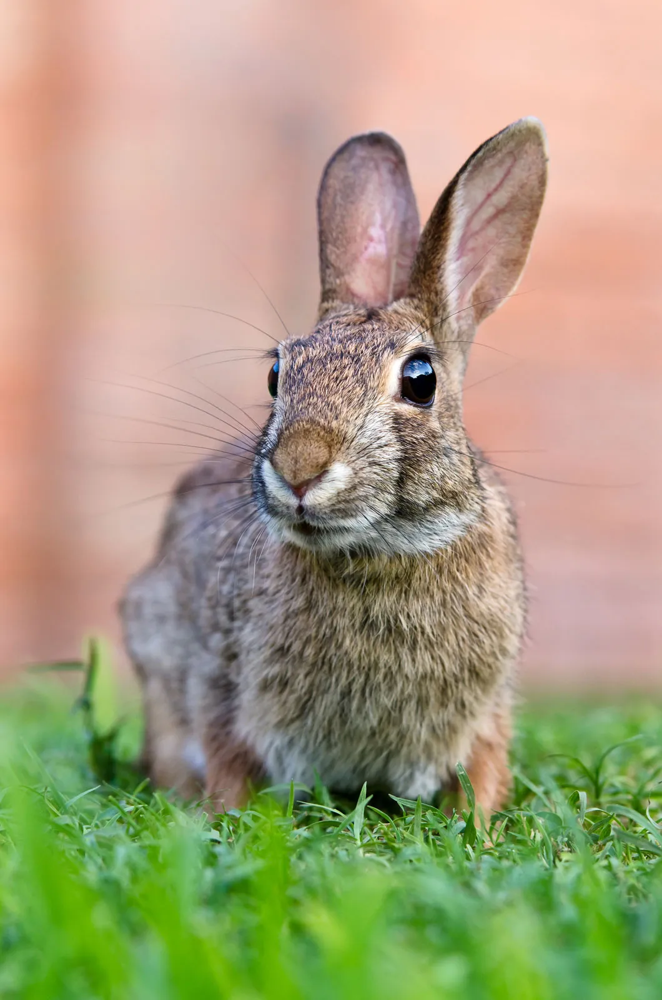

🐶 1. Dogs
Dogs are loyal and social animals. They enjoy going on walks, playing fetch, and spending time with their human companions.
Basic Care Needs
- Provide balanced food, clean water, and regular daily exercise.
- Schedule routine veterinary checkups and vaccinations.
- Offer training, affection, and a safe, comfortable sleeping area.
🐱 2. Cats
Cats are curious and independent animals. They enjoy exploring, playing with toys and relaxing in comfortable places.
Basic Care Needs
- Provide fresh water and balanced food.
- Keep their litter tray clean.
- Provide toys, attention and a safe environment.
🐰 3. Rabbits

Rabbits are gentle animals that enjoy exploring and hopping around. They need space to move and suitable places to hide.
Basic Care Needs
- Provide unlimited suitable grass hay and fresh water.
- Offer safe space for exercise and exploration.
- Handle them gently and provide appropriate shelter.